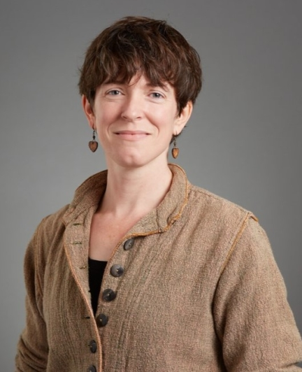

The Women in Data Science (WiDS) Conference at Middlebury College
Abstract
On March 4th, I attended the WiDS conference here in Middlebury. The room was filled with Middlebury Students eager to hear lectures, talk to peers, and eat some delicious snacks. Looking around the room, there is a 60/40 split of women and men. To a passerby, it might seem like Computer Science is a deeply diverse. To Computer Science Majors at Middlebury, one can notice that the class is roughly a 50/50 split of men. I learned from 4 different Professors on how to use data, and what it means to be a women in Data Science. I read the report “Solving the Equation: The Variables for Women’s Success in Engineering and Computing” written by Corbett and Hill (2015) to supplement all the work I did in this essay and from there I learned that women were the original data scientists that were then systematically excluded from the same profession over-time.
Why then, do women make only 13% of all engineers?
To answer this question, let us first reflect on the history of women in Computer Science, Engineering, and Math to understand the situation women face now. Leading up to the 1950s, the “first computing programmer”, Ada lovelace figured out that one could feed a series of instructions to an theoretical machine to perform calculations. Women were among the first programmers of the ENIAC during World War 2. This led traditionally male engineering programs to start allowing the admission of women to these institutions.
Computing in the 1960s was still viewed as a “low-status clerical” job, which revolved around administrative and “secretary”-style work. However, companies began to use aptitude tests that male stereotypes heavily benefited from. A strong personality began to develop around Computer Science, leading to the stereotype of “antisocial, mathematically inclined males” being the face of Computer Science. While prompting a drop in representation of women in CS, there existed another significant drop in the 1980s.
The personal computer became a “toy” for young men to get heavy interaction with in the home. This connected gaming culture to the home, which was a culture that traditionally excluded women. As Gamer-culture has become entwined with those those interested in Computer Science departments, it is important to notice what actually happens at these companies that revolve around gaming. What you can see can be regarded as “frat boy behavior”, in which these large video-game companies, which heavily influence those who get into computer science, are creating unsafe and harmful situations in which women who want to work in industry are forced to face. This feeds into an unfortunate positive feedback loop, where as more women feel uncomfortable and leave these positions, men then fill in the gaps. What are the reprecussions of diversity dropping in tech and related fields?
With the growing amount of dependency our world has on the work of tech companies, algorithms continue to be implemented to affect lives in a major way. As can be clearly inferred, missing half the population can lead to drastic consequences, and is as unsustainable as fossil fuel usage. With greater diversity of thought in the workplace, we can make better, more informed decisions. Moreover, it leads to lower quality to life for women in the workforce. Engineering and CS tend to offer job benefits that are rarer in other fields. Workplace flexibility exploded during COVID, but engineering roles have maintained that working from home is a viable path. There are reports that Job satisfaction is higher in engineering jobs, and while I believe often times applies more to men, these companies can most definitely offer this satisfaction for women in these companies, if they fix their current issues that push women away. Perhaps most importantly, the engineering and computing fields have almost entirely closed the gender pay gap, with women being paid 90 cents for every dollar made by a man.
Is there hope?
These disciplines continue to disenfranchise women with work-life balance issues, sense of belonging, in-group favoritism, and microinequities, so is there any hope? I think that is a perfectly logical question, to which I of course say yes!! It is important to remember that people all around the world are trying to resolve this imbalance in Math, Engineering, and CS. Programs like Girls who code seek to provide opportunities for more women to get access to coding and eventually becoming engineers. Huge conferences like the Grace Hopper Conference try to connect female and non-binary students from around the world to network and connect with female professionals in the Engineering and Data Science fields. However, how does a college or university get to push women towards these disciplines? Fostering a strong bond between engineers-to-be and working professionals at the same university is where events like WiDS comes in.
My experience at WiDS
It was exciting to be seated among so many people in STEM at Middlebury. The room was much more diverse than the average Middlebury classroom, and we all munched on small snacks as we waited for the presentations to begin.
The first presenter was Professor Amy Yuen. She is a political science teacher at Middlebury that focuses her research on the intersection between game theory, large statistical (SC) and asked two questsion: Why do members continue to run for spots and is the SC democratic? Through these questions she wanted to answer whose issues are discussed on the international stage. Her research showed two key things: 1. There are Permanent Members whose main job is to fight crisis and maintain. 2. Elected Members are more likely to fight for current issues. Within these Elected Members, there are some who invest lots of money to get reelected. Ultimately, this answered that members who continue to run are trying to fight for current issues and that the SC is not democratic as votes from certain countries carry more weight i.e. Permanent Members.
The second presenter was Professor Sarah Brown. She is a Computer Science professor at the University of Rhode Island. Her research focuses on Machine Learning as a multidisciplinary field. As a keynote speaker, Professor Brown did not fail to deliver. With a BS, MS, and PhD, she appears to be an extremely STEM and hard science person. However, her presentation sought to explain what makes up Machine learning. It is made up of three domains: Computer Science, Statistics, and Domain-Expertise. While CS students often also understand statistics, they have to reach out to domain-experts for their expertise. What Professor Brown presented was how Computer Scientists and Data Scientists can add specific “keys” to their toolbox to unlock this knowledge.
She presented three keys: “Contextualize Data”, “Disciplines Are Communities”, and “Meet People Where They Are”. Professor Brown explains that data is a primary source. Treat this like Social studies class and use context to supplement the trends you are seeing, and you will see underlying properties emerge. After seeing these patterns, it is important to know when to make and deploy a model. As a community and a discipline, we must define fairness, and know how that influences so that we can properly determine how to use our models. But how do we ensure that people do their due diligence and try to ensure fairness? This is where we meet people where they are. You have to show that unbiased algorithms affect all of us, and that all of us need to fight for fairness in algorithms.

The third presenter was Professor Jessica L’Roe. She is a professor of Geoegraphy at Middlebury that studies the relationship with humans in forest landscape in East Africa and the Amazon. Professor L’Roe brought a refreshing look at how data can be used in non-traditional settings, and more importantly how data is collected. She presented quite a bit of work, but her research on “Landscape Changes around Kibale National Park” was particularly interesting. She harped on the importance of both qualitative and quantitative data. A piece of data that was particularly interesting to me was collecting data about what benefits people felt from the forest near them. Within her talk, her overall question appeared to be “How do you apply stats to work?” and she challenged this by showcasing her various usages of data.
The fourth presenter was Professor Laura Biester. She is a professor in our very own Computer science department at Middlebury. Her research focuses on natural language processing and computational social science. Her talk focused on a pretty impressive technological feat of searching all the comments in reddit and finding examples of people using “identity claims” of depression. These were instances where people stated that they were diagnosed with depression. The question posed was to discover if there were benefits to sharing one’s diagnosis on an anonymous forumn like Reddit. The research focused on the difference in the way they spoke before and following their identity claim. The research ultimately showed that they displayed more positive emotions after their identity claim.
Reflection
From this blog, I learned how to speak about a very real issue in Computer Science. Women continue to choose other fields not because of some arbitrary disinterest but because of a slew of behavior within the CS world that is both intentionally and unintentionally excludes women. These same causes also disproportionately underrepresented minority women to be significantly less likely to pursue fields related to engineering. I identified with some of the struggles faced by women as a Latino man interested in the CS world, particularly the inherent in-group favoritism and a sense of belonging. I also understood that there were varying degrees with which I identified with the very serious problems that women face in these disciplines. Going to the conference gave me a very unique opportunity to listen to female professionals adjacent to the Engineering disciplines clearly outline how they used data in their every day work. Following this meeting I talked to my partner a bit about this blog post and she told me possibly my biggest takeaway from the reading and essay I have synthesized. Female Professionals, regardless of the field, thread a delicate line between displaying femininity and masculinity. Particularly in the CS world, they are competing in a predominantly male field, and thus “masculine” traits are cherished. However, women are still expected to be somewhat feminine, otherwise they are also seen in a negative light. Having to experience this sort of dysphoria in the workplace was incredibly eye-opening to me, and without this blog post I might not have learned that.
From the presenters, I particularly enjoyed the key-note speaker. Professor Brown did an incredible job connecting soft skills to Computer Science. I resonated heavily with the way she detailed how our past experiences in non-STEM areas should influence how we are thinking about CS. Moreover, she provided a unique viewpoint being an extremely decorated POC female professor and gave liberal arts CS majors a sense of tranquility as we apply to opportunities in the real world.
References
“https://www.aauw.org/app/uploads/2020/03/Solving-the-Equation-report-nsa.pdf” by Corbett and Hill 2015
“https://www.middlebury.edu/college/academics/computer-science/faculty-and-staff” (for photos)